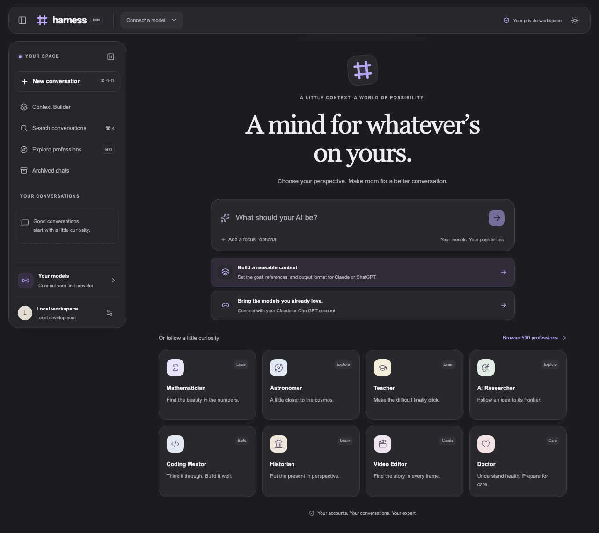

Give your chat a brief.
Set the goal, add your sources, and describe the result you need. Use the same brief with your ChatGPT or Claude account.
Build a context in your browser and use it in ChatGPT or Claude. For in-app chat, follow the local setup guide.

Keep the context with the work.
Start a product brief from interview notes. Save the source material and the output format, then reuse that brief the next time you need a roadmap.
- Choose a role
- Search 500 professions or write your own. Add a goal, relevant details, and the output you want before the first message.
- Save a brief
- Keep your instructions and references in Context Builder. Each chat keeps the revision it started with.
- Switch models
- Move between connected models from the chat header. Harness carries the brief and conversation history forward.
Run Harness locally.
The app stores conversations on your computer. When you send a message, the selected provider receives the conversation context needed for its response.
-
Unzip the download
Install Node.js 22 or later, then extract
harness-studio.zip. Install the official Claude Code client on the same computer if you plan to use Claude. -
Start the workspace
Open a terminal in the extracted
harness-studiofolder. The first launch installs the pinned dependencies.npm start -
Connect your account
Open 127.0.0.1:4318 on that computer, choose Your models, and sign in with ChatGPT or Claude. Requests use your account’s plan and limits.